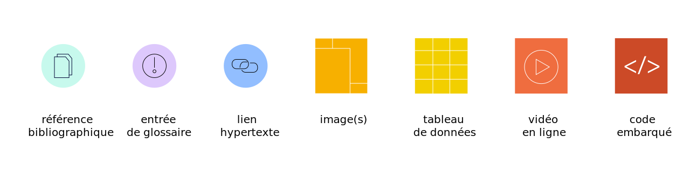
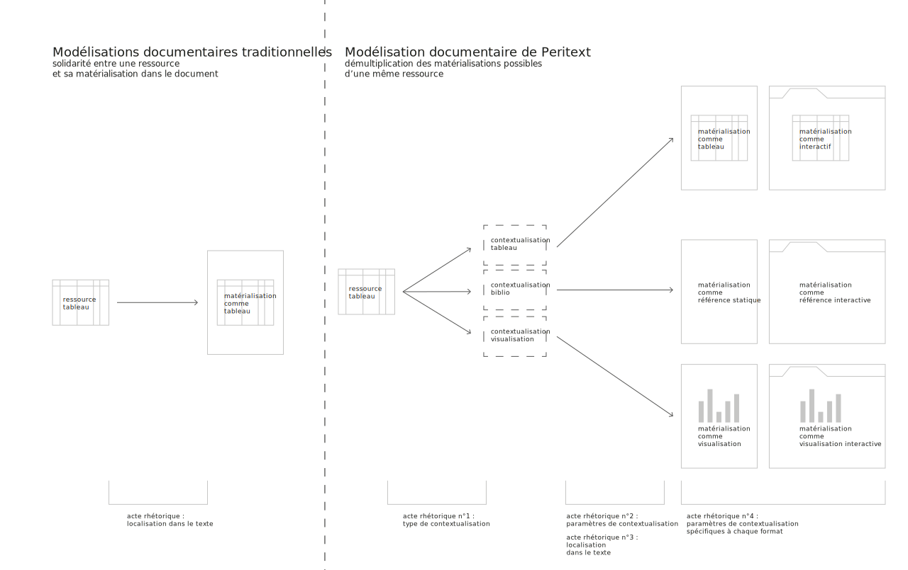
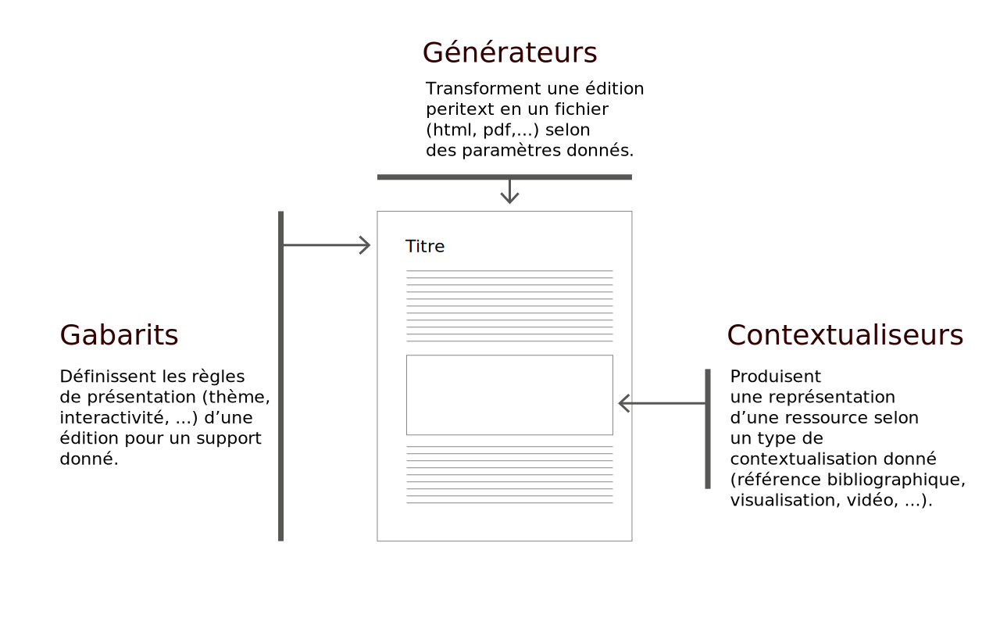

Hello ! welcome to the website of Peritext. There is not much to see on this source, it is dead simple !
Hello ! welcome to the website of Peritext. There is not much to see on this source, it is dead simple !
Peritext est une activité de design et de développement ouverte et libre visant à soutenir des pratiques d'édition savante sensibles et polymorphiques.
Peritext est développé pour soutenir des contextes éditoriaux semi-formels et peu intégrés dans des infrastructures traditionnelles, tels que la publication grise de travaux de recherche intermédiaires (working papers, éléments de carnets de recherche, publications adossées à des évènements de type séminaire, ...), la publication de compagnons ou de pièces jointes à des publications scientifiques classiques, ou encore des contextes de publication savante connexes au champ proprement universitaire, tels que ceux du journalisme, de la publication savante amateure ou de l'enseignement supérieur (mémoires, thèses,...).
Aperçu d'Ovide, application d'édition fondée sur l'écosystème Peritext
Un projet éditorial utilisant Peritext est en mesure de :
permettre aux auteurs, designers et éditeurs une grande liberté de mise en forme des documents et des éléments non-textuels mobilisés dans les éditions (images, vidéos, visualisations, …), selon des principes de conception paramétrique permettant un design avancé
offrir plusieurs éditions pour plusieurs supports (web, imprimé, …) à partir d’un matériau commun, tout en ayant la possibilité de paramétrer très précisément les contenus et les aspects de chaque édition
respecter les exigences documentaires et techniques de l'édition savante contemporaine
Le projet Peritext est constitué de plusieurs facettes interconnectées :
un modèle conceptuel de description structurée des productions savantes
un format de données construit à partir de standards existants pour implémenter ce modèle conceptuel de manière opérationnelle
Ovide, une application d’édition de publications autonome, libre et facilement personalisable qui permet de concevoir des publications web et imprimées
Pourquoi peritext
En amont comme en aval de l’acte de publication, les textes produits et échangés par les chercheurs universitaires convoquent d'une manière de plus en plus intime les environnements numériques dans lesquels ils sont inscrits.
On assiste en effet, dans un large spectre de disciplines comme de sujets de publication, à la prolifération d’une variété d’objets hétéroclites qui participent de manière de plus en plus active aux processus de recherches et sont — contrairement à jadis — directement et pleinement convocables au sein mêmes des publications. En témoignent des exemples aussi divers que l'utilisation croissante d’enregistrements audiovisuels en ligne, l’utilisation des réseaux sociaux et de twitter comme élément de corpus et/ou de restitution des débats en cours, la mobilisation de jeux de données ouverts, d’archives et de dépôts de sources numérisées rendant possible leur présentation sous forme diagrammatique ou tabulaire, etc. Cela dit, dans les formats les plus répandus de l’édition savante, les traces du web et autres ressources non-discursives peinent encore à sortir de la marge des pages : on les remarquera subrepticement au détour d’une note de bas de page (sous la forme d’un discret hyperlien), ou timidement reproduites dans une annexe secondaire, à la fin d’une entrée bibliographique ou dans la légende d’une figure, etc. Si ces connexions à des éléments externes désignent des ressources riches qui sont souvent disponibles en intégralité en ligne par ailleurs, elles restent pourtant souvent sur le seuil des échanges et des arguments : elles se retrouvent pour ainsi dire « effacées » des documents une fois traduites et formatées selon les conventions de publication instituées (articles, monographies, actes, mémoires, thèses, …).
D'autre part, l’essor de la publication en ligne, du mouvement de l’accès ouvert au résultats de la recherche, et de nouvelles pratiques de communication de la part des chercheurs eux-mêmes — qui vont de l’usage des réseaux sociaux à l’expérimentation de diverses formes de publication numérique expérimentale — a instauré un régime de production et de circulation des énoncés savants extrêmement riche où ces derniers se voient discutés, critiqués, reformatés et éditorialisés par-delà une multitude de mondes scientifiques, sociaux et médiatiques.
À partir de ce constat, Peritext vise à développer des manières alternatives de connecter les modes de production des énoncés savants avec les contextes du web. Il s'agit d'opérer une double contextualisation : Peritext vise à faciliter et donner plus de sens à la contextualisation de ressources numériques et non-discursives dans les écrits savants, et dans le même temps à permettre une meilleure contextualisation de ces mêmes écrits savants dans les environnements numériques.
Dimensions principales de l’écosystème peritext
Écriture et édition polymorphiques
Le format de données Peritext permet de réunir dans une même représentation informatique un contenu et plusieurs modalités de mise en forme pour ce même contenu.
Peritext s’inspire des technologies de fabrication de chaînes éditoriales et autres initiatives relevant du “single-source publishing” ou "cross-media publishing" 123 qui consistent à produire une diversité de documents à partir d'un même contenu source.
Dans le même temps, il s’en distingue dans la mesure où il ne parie pas sur une automatisation des modes de mise en forme mais laisse plutôt aux équipes auctoriales et éditoriales une grande marge de liberté dans les modes de présentation des contenus selon les supports et les éditions d’une même production.
Un modèle unifié et souple pour gérer les arguments convoquant des éléments non-discursifs
Le format de données Peritext permet de prendre en charge la contextualisation de nombreux éléments extérieurs dans la structure argumentative d’un texte savant (références bibliographiques, jeux de données possiblement visualisables, documents audiovisuels, entités de glossaire, etc.).

Un aperçu des types de ressources qui peuvent être utilisées pour créer un environnement d'édition avec Peritext.
Pour ce faire, il repose sur un mode de représentation des contenus qui sépare les ressources convoquées dans une production et les différentes formes que ces dernières peuvent prendre dans le cadre de l'argumentation opérée par un texte. Ces modalités de mises en forme peuvent être spécifiées de manière très précises en fonction des intentions rhétoriques des auteurs, et réutilisées à plusieurs endroits pour les modes de mise en forme complexes (ex. visualisations de données).
Ce schéma représente la modélisation documentaire particulière de Peritext, qui ajoute un troisième acteur à la traditionnelle dichotomie "contenu/forme".
Ainsi, Peritext parie sur une complexification des rôles à l’oeuvre dans la production d’un contenu éditorial : il permet aux auteurs de prendre davantage en main des dimensions de mise en forme traditionnellement attribuées aux éditeurs et aux designers, afin de leur permettre de convoquer plus centralement les questions de mise en forme dans l’élaboration de leur argumentaire.

Ce schéma représente la manière dont le modèle Peritext permet un usage rhétorique plus fin des éléments non-discursifs dans une production savante.
Respect des normes techniques et documentaires de l'édition scientifique
Le mode de modélisation des contenus de Peritext permet par ailleurs de répondre à une série de normes spécifiques à l'édition scientifique en termes d'indexation et de citabilité. Ainsi, le caractère très structuré des contenus permet d’intégrer dans les contenus d’une édition des métadonnées permettant le moissonnage et la description des contenus pour des contextes savants, et aussi d’exposer les données des pages à l’usage de logiciels de gestion bibliographique.
Modularité technique et éditoriale
Peritext est construit selon une logique modulaire qui permet beaucoup de souplesse et de variations dans l'implémentation d'un écosystème éditorial spécifique (en termes de supports visés, de types de ressources prises en charge, de flux de travail individuel ou collaboratif, ...).

Gabarits, contextualiseurs, et générateurs, forment les trois types de blocs de construction qui peuvent être assemblés pour construire un environnement éditorial spécifique avec Peritext.
Outre les paramètres exposés par chacun des modules, peritext ouvre aux utilisateurs avertis la possibilité de préciser et de façonner la présentation graphique des documents grâce au langage CSS qui peuvent être utilisés de manière distincte pour chacune des éditions produites à partir de la production.
À propos
Peritext est un projet expérimental et libre développé dans un contexte de recherche en design. Le projet est né en 2013 dans le contexte d'une croissance rapide, en France, du champ des humanités numériques d’une part, et de celui de la recherche en design d’autre part. Ces deux milieux partagent la nécessité de mettre en scène et discuter de manière élaborée une diversité de documents hétéroclites impliqués dans les recherches qui les composent.
Pourquoi Peritext s'appelle-t-il Peritext ?
Le nom du projet est une référence au travail du critique littéraire et chercheur Gérard Genette. Dans son travail, le "péritexte" se réfère aux éléments qui entourent le texte principal d'un livre (titre, appareil critique, ...).
Histoire du projet / remerciements
2013-2016 : Robin de Mourat bénéficie d’un contrat doctoral de 3 ans de la part du Ministère de l’Enseignement Supérieur et de la Recherche via l’ENS Cachan pour conduire des activités de recherche et d'enseignement auprès de Nicolas Thély à l'Université Rennes 2, dans le cadre du groupe de recherche MONADE. La naissance de Peritext doit beaucoup à ce contrat et à cet environnement bienveillant et stimulant.
Janvier 2014 — Mars 2015: la recherche doctorale de Robin de Mourat le conduit à se lancer dans une activité d’observation participante auprès de l’équipe du projet « Une Enquête sur les Modes d’Existence », investigation philosophique soutenue par un écosystème d’instances imprimées et de sites web se répondant mutuellement. La conduite d'entretiens commentés et d’une enquête numérique sur le projet donne un aperçu contextualisé des problématiques et des potentialités de la publication polymorphique dans le contexte académique. Une partie importante des principes de conception de Peritext découle de cette expérience de terrain et des nombreuses suites qu’elle a occasionné.
2015 : rédaction par Donato Ricci & Robin de Mourat d’un article de positionnement portant sur le projet EME, dont émerge la centralité du concept de contexte dans les enjeux actuels de l'édition savante.
Juin 2015 : conduite du workshop « Open AIME », séance de design prospectif visant à faire dialoguer l’écosystème EME (ses composantes techniques et processus de design) avec les situations de recherche d’autres chercheurs. Ce workshop permet de cerner les directions et perspectives de développement qui seront au centre de peritext.
Janvier 2016 : Publication collective de l’article « Clues, Anomalies, Understanding » qui sur la forme propose une première itération de peritext, via la réalisation d’un site web généré à partir de contenus écrits selon une syntaxe markdown+bibtex+json.
Été 2016 : Première spécification & implémentation de Peritext sous la forme d’une bibliothèque javascript unique utilisant des données encodées en markdown & BibTeX et stockées dans un dossier de fichiers textes
2016-2017 : développement de Peritext dans le cadre du projet Quinoa pris en charge par le médialab Sciences Po dans le cadre du programme FORCCAST — les spécifications du format sont simplifiées et rationalisées à cette occasion
Juin-Août 2017 : refactorisation du projet comme un écosystème ouvert de modules, écriture d’une première spécification opérationnelle du format peritext en json-schema, début de développement de l’éditeur Ovide.
Février-Septembre 2018 : industrialisation & mise en production de l’éditeur Fonio auprès de +1000 étudiants de Sciences Po dans le cadre de cours de sciences sociales de niveau license 2. Fonio est une application d’édition collaborative qui repose sur une version allégée du schéma de Peritext et partage certains de ses modules.
Janvier 2019 : publication de la version alpha (fonctionnelle mais encore instable) de l’éditeur autonome Ovide
{kind=link}
{kind=link}
{kind=link}
{kind=link}